地政学
ベルンは連邦議会、政府、省庁、各国大使館が集まるスイスの政治中枢です。中立国の合意形成、直接民主制、州の自治が、巨大な首都ではなく歩ける旧市街の中で運営されます。外交の静かな舞台でもあります。調整も続く。
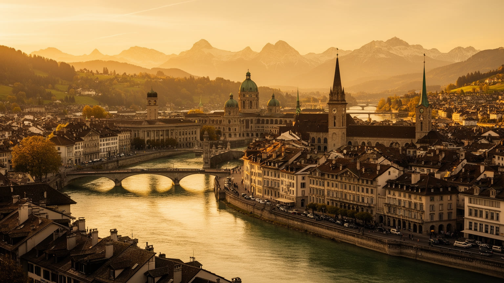
🇨🇭 スイス / ヨーロッパ / World City Atlas
アーレ川の湾曲に守られた旧市街と、連邦議事堂、鉄道、大学、医療、観光、州都の行政が近い距離に重なるスイスの連邦都市。大都市ではないからこそ、政治と日常の距離がよく見える街です。
都市の骨格
ベルンはスイス最大の経済都市ではないが、連邦議会と政府、省庁、外交、鉄道、州都機能が集まる。旧市街の石造りの連続とアーレ川の地形が、政治都市を観光都市でも生活都市でもある場所にしている。
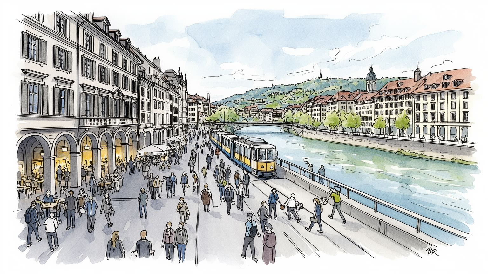
ベルンは連邦議会、政府、省庁、各国大使館が集まるスイスの政治中枢です。中立国の合意形成、直接民主制、州の自治が、巨大な首都ではなく歩ける旧市街の中で運営されます。外交の静かな舞台でもあります。調整も続く。
行政、医療、大学、鉄道、保険、情報通信、観光、州内の農業と精密産業が経済を支える。連邦職員だけでなく、病院、介護、清掃、ホテル、建設、小売、通勤鉄道の働き手が、落ち着いた都市を動かしています。現場も厚い。
改革派の伝統、カトリック、ユダヤ人社会、イスラム系移民、各国の礼拝が重なる。アインシュタインの記憶、劇場、博物館、方言、食卓、旧市街のアーケードが、政治都市の硬さを生活文化へほどきます。祈りも残ります。
旅行者は世界遺産の旧市街、時計塔、大聖堂、連邦議事堂、熊公園、アーレ川を歩く。住民には家賃、通勤、保育、学生の部屋、移民の資格、高齢化、洪水と暑さへの備えが、静かな街の切実な課題です。水辺も日常です。
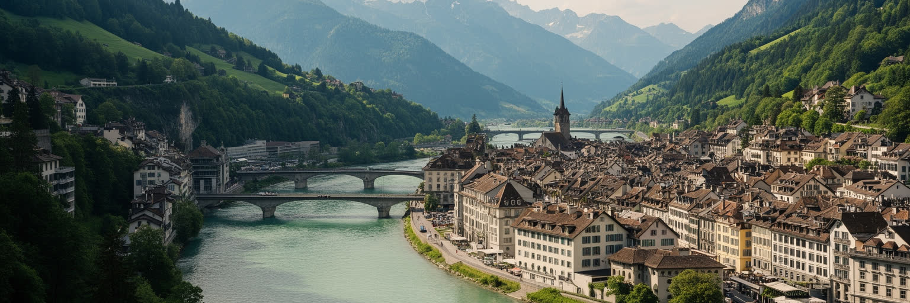
ベルンの都市形態は、アーレ川が大きく曲がる半島状の高台から始まる。旧市街は川に三方を守られ、砂岩の建物、長いアーケード、塔、広場、橋が東西に連続する。地形は観光の背景ではなく、政治、商業、住まい、交通、洪水対策を決める骨格である。川下の低地と高台のあいだには高さの差があり、マッテ地区、橋、坂道、エレベーター、トラムの動きが日常の身体感覚を作る。アーレ川は夏の水浴や散歩の場所である一方、増水時には都市に危険を思い出させる。西側へ広がった駅周辺、大学地区、住宅地、ワンクドルフ方面の開発は、旧市街の美しい輪郭を越えて都市が成長してきたことを示す。ベルンを読むには、旧市街だけを保存された絵として見るのではなく、川と丘が土地を限り、橋が生活圏を広げ、緑地が中心部に近い余白を残していることを見る必要がある。アルプスの遠景は都市に象徴的な奥行きを与えるが、実際の都市生活を決めるのは、川沿いの湿気、冬の霧、石畳の坂、駅へ向かう橋の混雑である。小さな地形の差が、ベルンの落ち着きと不便さを同時に作っている。さらに、中心がコンパクトであるほど、景観保護、住宅供給、交通容量の衝突は見えやすい。川を渡る一本の橋や歩道の幅が、観光の印象だけでなく住民の時間を左右する。橋を渡る回数が、都市の距離感を日々教える。毎日のことだ。
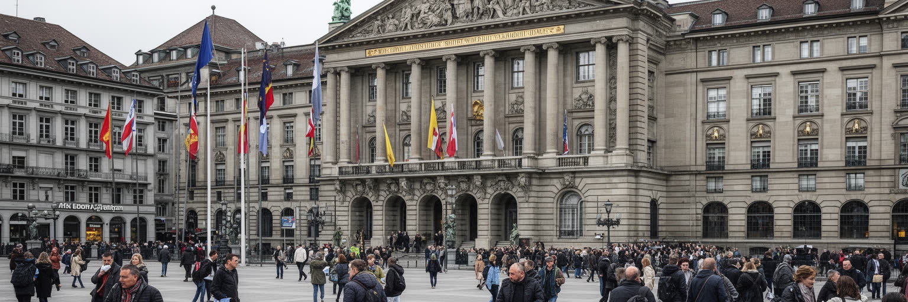
ベルンはスイス憲法上の「首都」という単語で単純に語られるより、連邦都市として機能する政治の場所である。連邦議事堂、連邦参事会、省庁、各国大使館、政党、報道機関が旧市街と駅周辺に近接し、直接民主制、国民投票、州の自治、連邦制の調整がここで日常業務になる。巨大な官庁街や記念碑的な軸線よりも、石造りの街路、市場、トラム、カフェ、広場の中に政治が置かれている点がベルンらしい。議員や職員は駅から歩き、住民や観光客は連邦議事堂前の広場を使い、抗議行動や公開行事も同じ空間に現れる。スイス政治は妥協と手続きの文化として語られるが、その背景には多言語、多宗教、都市と農村、金融都市と山岳州の利害を調整し続ける緊張がある。ベルンを政治都市として読むには、穏やかな景観だけでなく、合意形成に時間がかかる制度、少数意見を制度へ組み込む努力、そして移民や若者がどこまで政治参加できるかを見なければならない。静かな都市は対立がない都市ではなく、対立を投票、委員会、協議、自治体間交渉へ移す技術を持つ都市である。その技術は、街の小ささと政治の近さによって見えやすくなる。政策が作られる場所と生活の場所が近い分、住宅、交通、気候、社会保障をめぐる判断も抽象論で終わりにくい。広場に集まる人の声が、制度の重さを具体的な都市経験へ戻している。
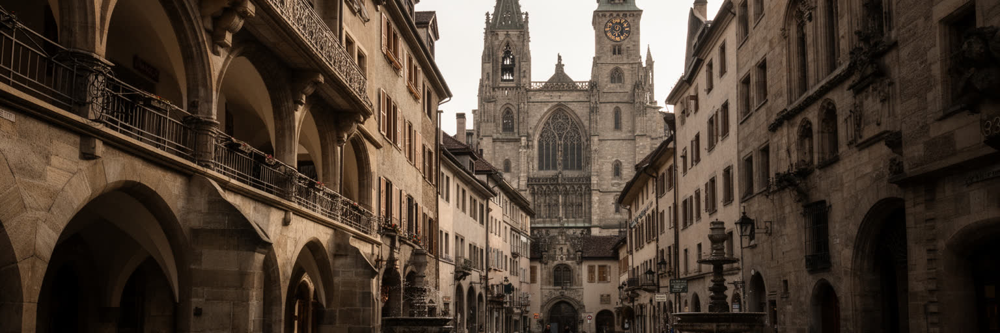
ベルン旧市街の魅力は、単独の名所よりも連続する都市空間にある。砂岩の建物、長いラウベと呼ばれるアーケード、時計塔、噴水、大聖堂、広場、橋がまとまり、歩く速度で中世以来の都市構造を感じられる。世界遺産として評価される景観は、保存された外観だけでなく、商店、住居、学校、役所、カフェ、通勤路が今も入っていることで都市として生きている。観光客は時計塔や大聖堂の塔、アーレ川の眺めを楽しむが、住民にとって旧市街は買物、仕事、行政手続き、夜の静けさ、家賃、バリアフリーの問題を抱える生活空間でもある。石畳と歴史的建物は美しい一方、車椅子やベビーカー、配送、暑さ、断熱、消防、防災には配慮が必要になる。観光消費が強くなれば、日用品店や地元の小さな商いが減り、旧市街が写真のための場所へ寄りやすい。ベルンの遺産を読むには、過去を凍結するのではなく、使い続けるための修理、規制、住民合意、公共交通、文化活動を見なければならない。旧市街の美しさは、都市の経済を飾るだけでなく、どのような生活を中心部に残すかという政治的な選択でもある。保存と生活が両立する時、歴史は観光商品ではなく都市の公共財になる。アーケードの下に普通の買物や通学が残ることは、遺産が住民から切り離されていない証拠である。修復の費用、店舗の入れ替わり、夜間騒音への配慮まで含めて、旧市街は毎日管理されている。
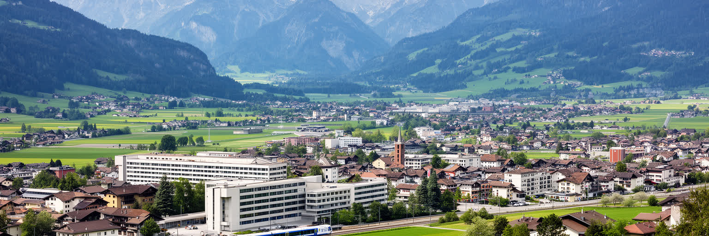
ベルンの経済は、市域だけで完結しない。州都としての行政、連邦機能、病院、大学、保険、情報通信、鉄道関連の雇用が中心部を支える一方、ベルン州全体には農業、食品、精密機械、医療、観光、山岳地域のサービス、ビールやチョコレートに象徴される消費文化が広がる。州のGDPを都市の指標として使う場合、旧市街だけでなく、ミッテルラントの農地、ベルナーオーバーラントの観光、ビールや時計関連の技能、近郊工業地帯まで含む広い経済圏を意識する必要がある。高賃金の連邦職員や専門職は安定した消費を生むが、介護、清掃、ホテル、飲食、小売、建設、交通の仕事も都市を動かす。観光地として穏やかに見える街でも、週末や会議期には宿泊、警備、案内、清掃が集中し、季節労働や移民労働に支えられる。ベルンの産業を読む面白さは、金融都市チューリッヒや国際機関都市ジュネーブのような派手な単一イメージではなく、公共部門、地域産業、観光、医療、教育が重なり、安定を作っている点にある。その安定は強みである一方、若い人の雇用機会、起業、住宅費、通勤圏の拡大をめぐる課題も生む。州都の豊かさは、周辺地域との相互依存を見て初めて理解できる。山岳観光の収入、農産物の流通、地方病院との連携、州行政の予算は、中心部の街路からは見えにくい。だからベルンの経済は、穏やかな都市景観の背後にある広い地域の労働分担として読む必要がある。
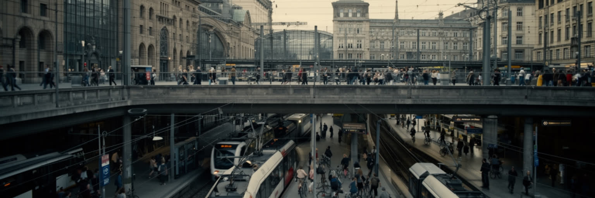
ベルン中央駅は、都市規模を超えた交通の重みを持つ。チューリッヒ、バーゼル、ジュネーブ、ローザンヌ、ルツェルン、インターラーケン方面へ向かう鉄道が集まり、スイスの東西軸とアルプス観光の入口を結ぶ。連邦職員、学生、病院勤務者、観光客、州内の通勤者が毎日駅へ流れ込み、トラム、バス、自転車、徒歩が旧市街と周辺地区を細かくつなぐ。ベルンは大都市ではないが、政治機能と大学、病院、行政が中心へ集まるため、朝夕の駅と橋には明確な通勤の圧力がある。公共交通の信頼性は生活の質を高め、車に頼らない旧市街の魅力を支えるが、工事、混雑、深夜移動、バリアフリー、自転車と歩行者の共存は常に調整が必要である。鉄道の便利さは、中心部に住めない人にも職場へのアクセスを与える一方、家賃の高い都市から周辺自治体へ生活を押し広げる。ベルンを交通都市として読むには、時刻表の正確さだけでなく、誰がどの時間にどこから通い、どの橋や停留所で待ち、どれだけの家賃と移動時間を負担しているかを見る必要がある。駅前の再開発、地下通路、バス停、駐輪場の設計は、観光客の快適さだけでなく、住民の日常の公平性を測る場所になる。さらに、連邦都市としての会議や投票の日程は移動量を変え、山岳観光の季節は駅の使われ方も変える。交通網は単なる便利さではなく、政治、観光、教育、医療を同じ時間表へ乗せる都市の基礎である。
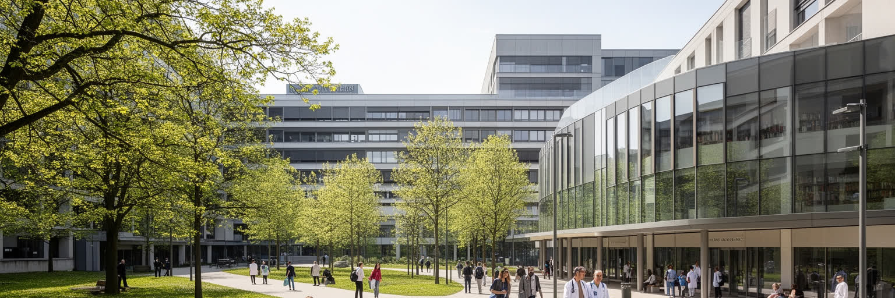
ベルンは政治都市であると同時に、大学と医療の都市でもある。ベルン大学、大学病院、研究機関、図書館、学生の住まい、研究職、医療従事者の通勤が、連邦行政とは別の都市のリズムを作る。医学、自然科学、人文社会科学、気候、宇宙、獣医学、公共政策の研究は、スイス国内外の学生と専門家を集める。大学病院は高度医療を担い、都市だけでなく州内の広い地域から患者と家族が訪れるため、交通、宿泊、介護、福祉とも結びつく。知識産業は高い教育水準を支える一方、学生の部屋不足、短期研究者の雇用、若い医療職の負担、研究資金の競争を生む。病院や大学を観光名所として見る人は少ないが、都市の安定した雇用と公共性を理解するには重要な場所である。講義室、研究室、病棟、図書館、カフェ、夜勤の通勤路は、ベルンの日常を静かに支えている。大学都市としてのベルンを読むには、優れた研究成果だけでなく、学費、住まい、移民研究者の資格、医療現場の人手不足、高齢化社会への対応を同じ視野に置く必要がある。知識と医療は都市の名声を飾るものではなく、住民の安心、地域医療、公共政策を実際に支える基盤である。連邦政府に近い研究者は政策議論へ関わりやすく、医療現場の知見も制度へ届きやすい。その近さは強みだが、現場の疲労や学生の生活費を見落とせば、公共性は細っていく。
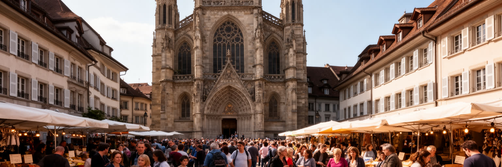
ベルンの文化を読むとき、改革派の記憶と多文化の現在を分けて考えることはできない。大聖堂、教会、鐘の音、旧市街の儀礼は、スイスの宗教改革と市民自治の歴史を伝える。一方、現代のベルンにはカトリック、ユダヤ人社会、イスラム、正教会、仏教、ヒンドゥー、無宗教の住民、各国から来た学生や職員が暮らし、学校、職場、商店、礼拝、食卓で多様な文化が交じる。政治都市の落ち着いた表情は、必ずしも均質な社会を意味しない。移民の家族は言語、資格、住宅、教育、職場で壁に向き合い、同時に料理、音楽、商店、宗教行事、スポーツを通じて都市の生活文化を広げている。ベルンドイツ語の方言や地域の祭りは強い親密さを作るが、外から来た人には距離にもなる。ベルンを文化都市として読むには、アインシュタインの記憶や美術館、劇場、旧市街の美しさだけでなく、移民の食料品店、語学支援、礼拝後の会話、学校の保護者会を見る必要がある。宗教と文化は、観光客が眺める歴史的建物の中だけでなく、住民が互いの違いをどこまで日常のルールに組み込めるかに現れる。静かな街ほど、小さな排除や孤立は見えにくい。共存は制度と近所づきあいの両方で試される。劇場や博物館の文化だけでなく、食卓、葬送、祝祭、休日の過ごし方にも都市の多様性は表れる。政治の中心に近い街だからこそ、包摂の言葉が日常で実現しているかが問われる。
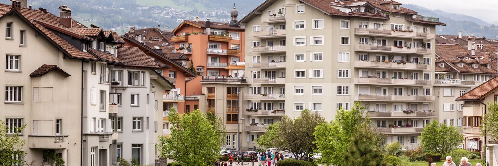
ベルンは大都市の過密からは離れて見えるが、住まいの課題は軽くない。旧市街や駅に近い地区は便利で人気が高く、学生、若い家族、単身者、移民労働者、高齢者にとって手ごろな部屋を探すことは難しい。連邦行政、大学、病院、観光の雇用が安定した需要を生み、周辺自治体からの通勤も増える。スイスの住宅市場では賃貸が重要で、家賃、保証、応募書類、言語、在留資格の差が住まい探しに影響する。ベルンの生活の質は、公共交通、公園、学校、医療、治安、文化施設の近さに支えられるが、その質に誰が届くかは所得と制度に左右される。高齢化が進む中で、在宅介護、バリアフリー、地域の見守り、医療費、孤立への対応も重要になる。福祉都市としての力は、困っている人を中心部から見えなくすることではなく、相談窓口、住宅支援、雇用支援、教育、医療へつなげる回路を保つことにある。観光客が歩く美しい旧市街の近くにも、家賃を心配する学生、夜勤後に帰る介護職、補助を待つ家庭がいる。ベルンを生活都市として読むには、静けさや安全性だけでなく、支える仕事をする人が都市に住み続けられるかを見る必要がある。住みやすさは都市の評判ではなく、家計と時間の中で毎月試される。家賃が上がれば、子育て世帯や若い文化活動は周辺へ押し出され、通勤時間と地域の分断が増える。福祉と住宅を別々に扱わないことが、落ち着いた都市の持続条件になる。
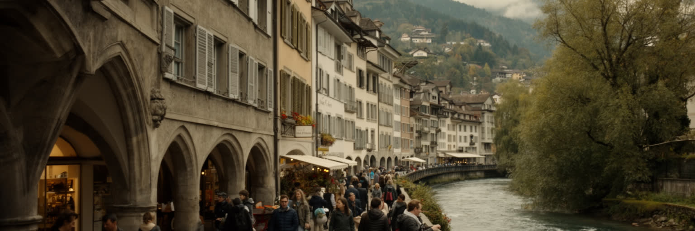
ベルン観光は、短い距離で都市の多層性を歩ける点に魅力がある。中央駅から旧市街へ入ると、長いアーケード、時計塔、噴水、連邦議事堂、大聖堂、アーレ川の眺めが連続し、さらに熊公園やローゼンガルテンへ足を延ばせば、川に囲まれた都市の形がよく分かる。観光客にとってベルンは清潔で落ち着き、チューリッヒやジュネーブより穏やかなスイス像を見せる街である。しかし観光は景観だけで成り立たない。ホテル、飲食、案内、清掃、交通、警備、文化施設の職員がいて、会議や週末旅行の流れに合わせて働く。旧市街の商店は訪問者を迎える一方、住民向けの日用品店や市場、学校、役所も同じ空間に残る。観光消費が強まりすぎれば、店の構成や家賃が変わり、中心部の生活感が薄くなる。ベルンを訪れるなら、時計塔の時刻だけでなく、朝の通勤、昼の市場、夕方に川沿いで泳ぐ住民、連邦議事堂前の広場で休む人を見るとよい。名所と日常が近いことが、この都市の最大の読みどころである。写真に残る静けさは、住民の睡眠、商い、交通、観光の作法が折り合うことで保たれている。歩く旅は、都市を消費するだけでなく、都市が使われ続ける条件を感じる時間になる。熊公園や川辺も、単なる名物ではなく、動物福祉、公共空間、環境教育を考える入口である。観光の優しさは、訪問者の便利さと住民の生活が互いを削らない時に生まれる。
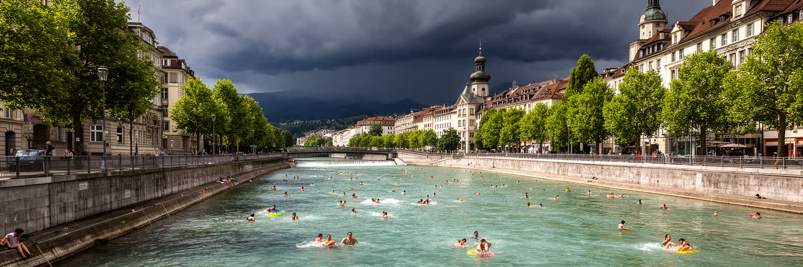
ベルンの気候は、スイス高原の西岸海洋性に近い穏やかさを持ち、冬の霧や冷え込み、夏の心地よい日差し、時に強い雷雨を経験する。アーレ川は都市に涼しさ、景観、散歩、水浴の楽しみを与えるが、同時に増水と洪水の記憶を運ぶ。川沿いの低地、橋、地下空間、歴史的建物は、気候変動による豪雨や熱波に対して繊細である。旧市街の石畳や密な建物は夏に熱を持ちやすく、高齢者、屋外労働者、冷房の弱い住宅に負担がかかる。水質管理、下水、堤防、警報、緑地、街路樹、日陰、公共施設の涼しさは、観光の快適さではなく住民の健康を守る条件になる。ベルンの気候対策は、アルプスの氷河や水資源の変化とも無関係ではない。山地の降水、融雪、河川流量、保険、エネルギー、観光が都市の生活へ戻ってくる。ベルンを気候から読むには、アーレ川で泳ぐ夏の美しい風景と、洪水への備え、暑さに弱い人、古い住宅の断熱、公共交通の脱炭素を同じ問題として見る必要がある。水辺の豊かさは都市の誇りだが、それを公平に守る制度がなければ、気候リスクは静かに格差を広げる。涼める場所と安全に逃げられる道は、歴史都市の新しい公共財である。川で遊ぶ自由を守るには、水質、流速、避難情報、救助体制を地味に整え続けなければならない。気候適応は美しい景観を守る作業であると同時に、弱い立場の人を暑さと水害から守る都市政策である。
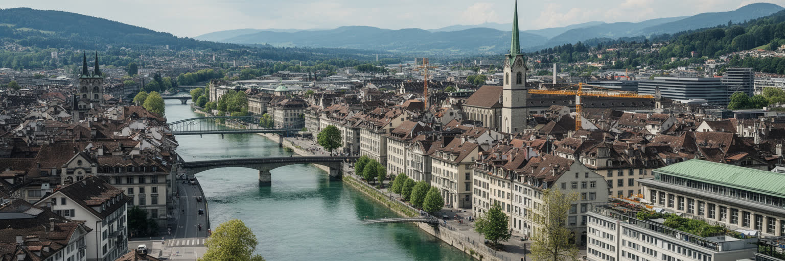
ベルンを読む面白さは、世界都市の機能が大きなスカイラインではなく、歩ける旧市街と川の地形の中に収まっている点にある。連邦議事堂と省庁はスイスの政治を動かし、直接民主制と連邦制の合意形成を日々支える。旧市街は世界遺産として美しいが、住民の買物、学校、役所、観光、抗議、通勤が同じ石造りの空間を使う。鉄道駅は国の東西南北を結び、大学と病院は知識と医療を支え、州経済は農業、観光、行政、地域産業へ広がる。ベルンはチューリッヒの金融やジュネーブの国際機関ほど派手なラベルを持たないが、その分、制度、福祉、交通、住宅、文化、気候の関係を読みやすい。住民には高い生活の質がある一方、家賃、学生の住まい、移民の資格、介護、通勤、洪水と暑さへの備えが課題として残る。観光客は時計塔や大聖堂、熊公園、アーレ川を楽しむが、都市の本質は名所の間にある普通の街路に現れる。政治が日常と近いこと、歴史が使われ続けていること、川が美しさとリスクを同時に運ぶことが、ベルンの核心である。小さな連邦都市を丁寧に歩くと、スイスという国が合意、自治、公共性をどのように空間へ刻んでいるかが見えてくる。大きな都市の派手さがない分、行政窓口、通勤橋、学生の部屋、川辺の木陰、旧市街の商店が都市理解の手がかりになる。ベルンの価値は、静かな秩序を保ちながら、異なる人の生活を中心部から追い出さない力にかかっている。